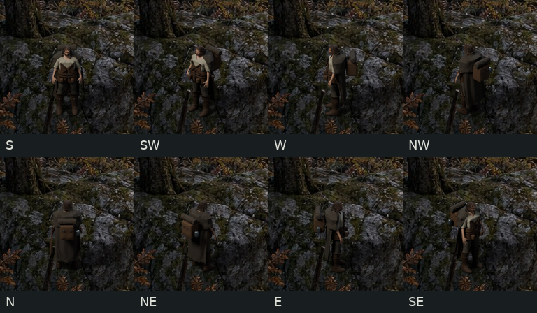
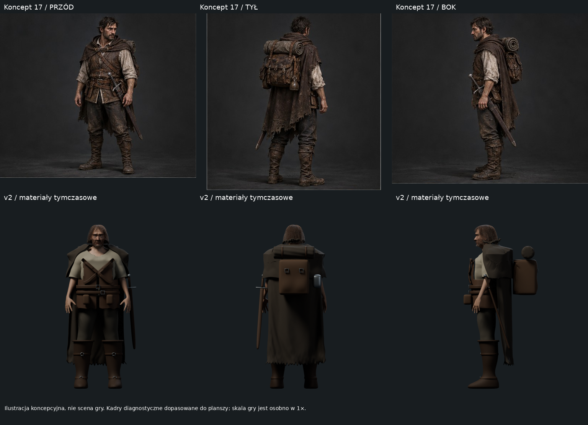
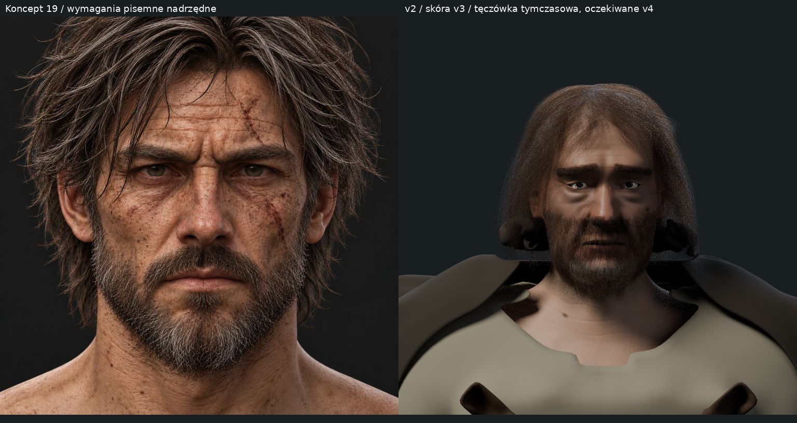
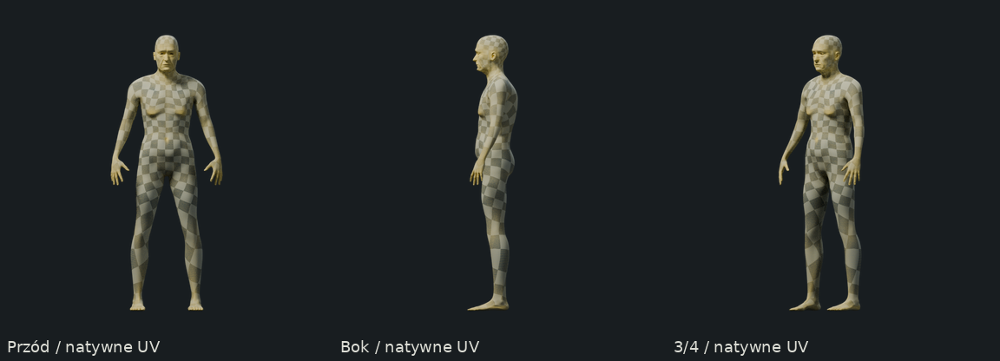
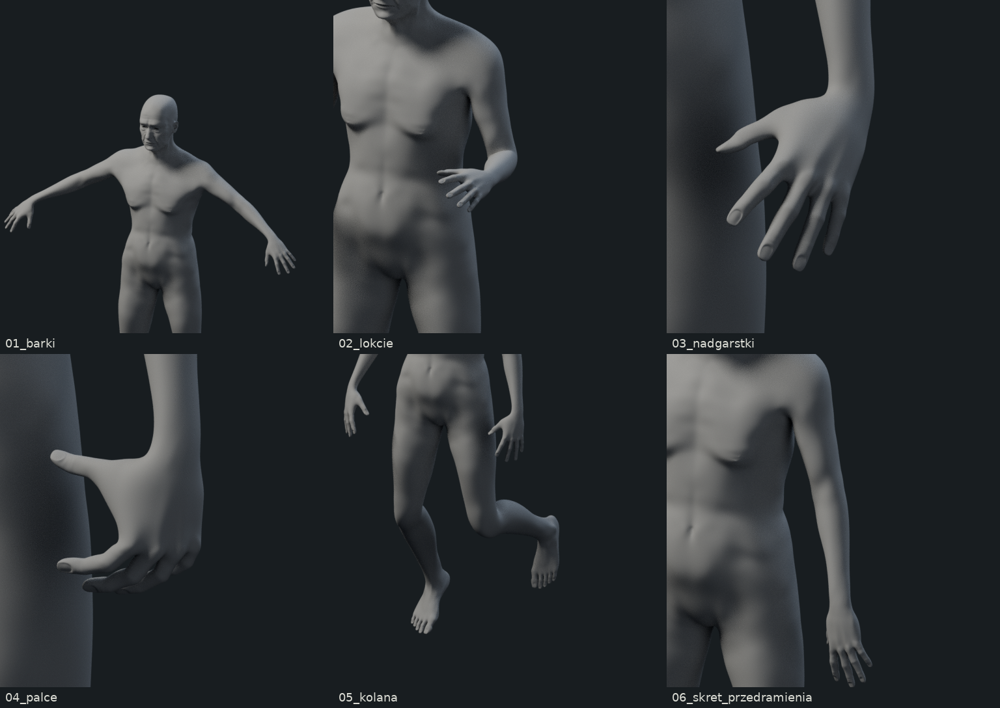

Pełne ciało MakeHuman z natywnym UV, rig 163 kości, głowa według 19 i skóra v3. Strój ma materiały tymczasowe. Oczy szarozielone oczekują v4. Bez animacji i atlasów przed B2.
Model .blend · HANDOFF · P2 — manifest · Raport





Koncepty są ilustracjami, nie działającą sceną gry. Plansze diagnostyczne nie zmieniają kontraktu. Pomiar przenikań nie obejmuje Curves ani wnętrza pojedynczej siatki. Wymagana ocena B1/B2 autora.